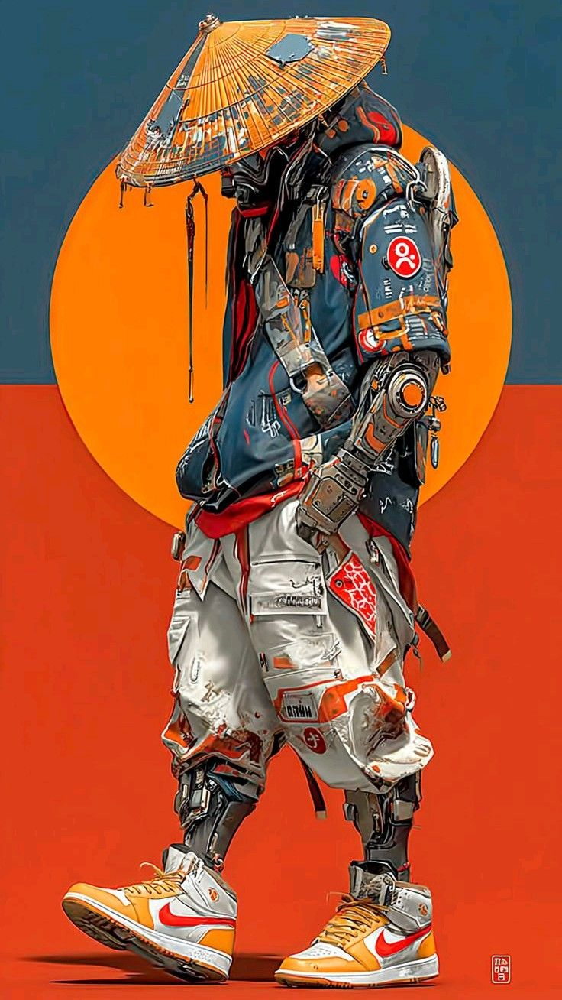
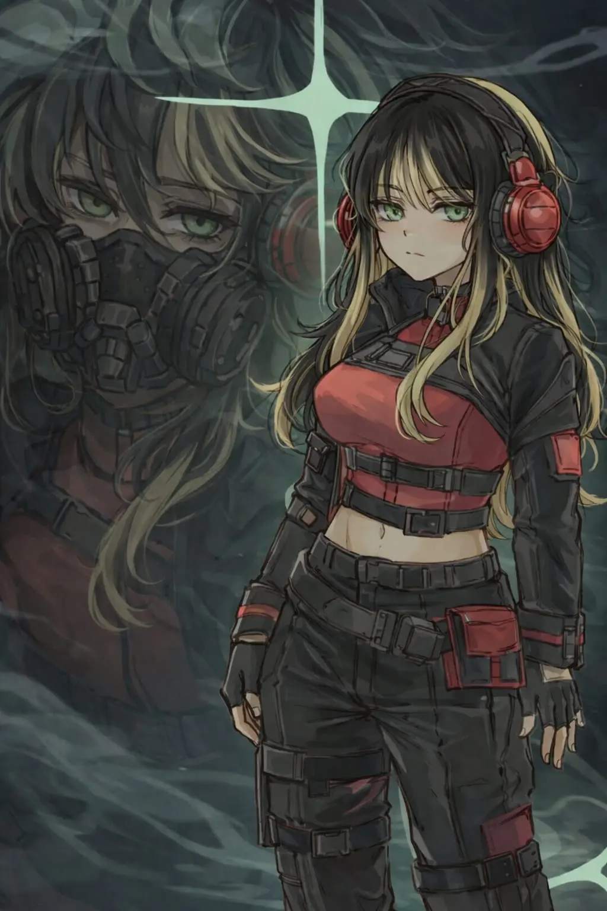
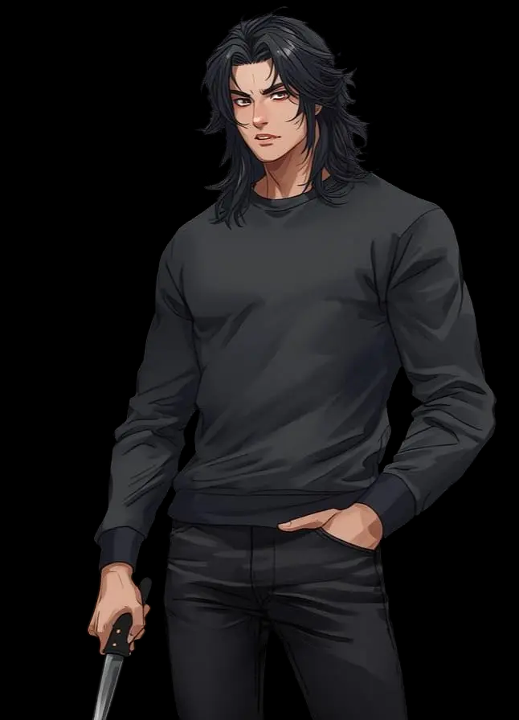
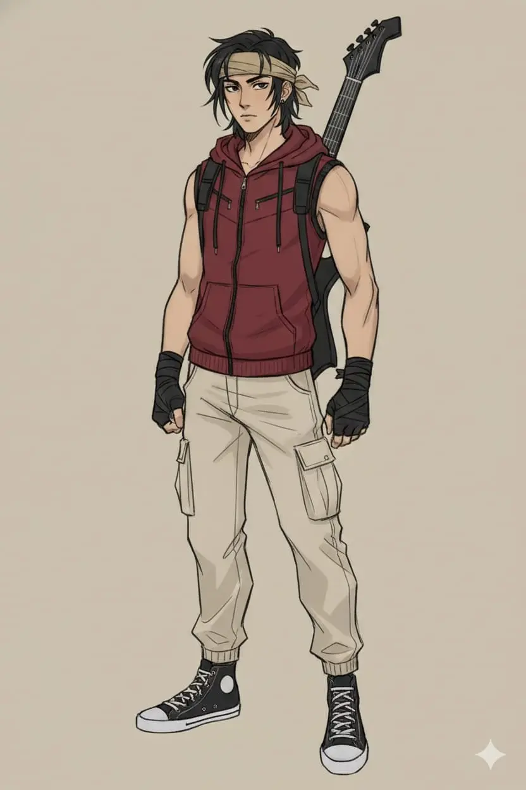
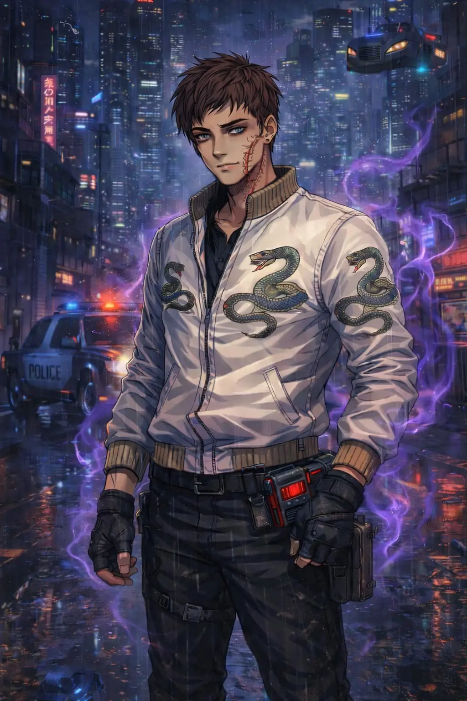
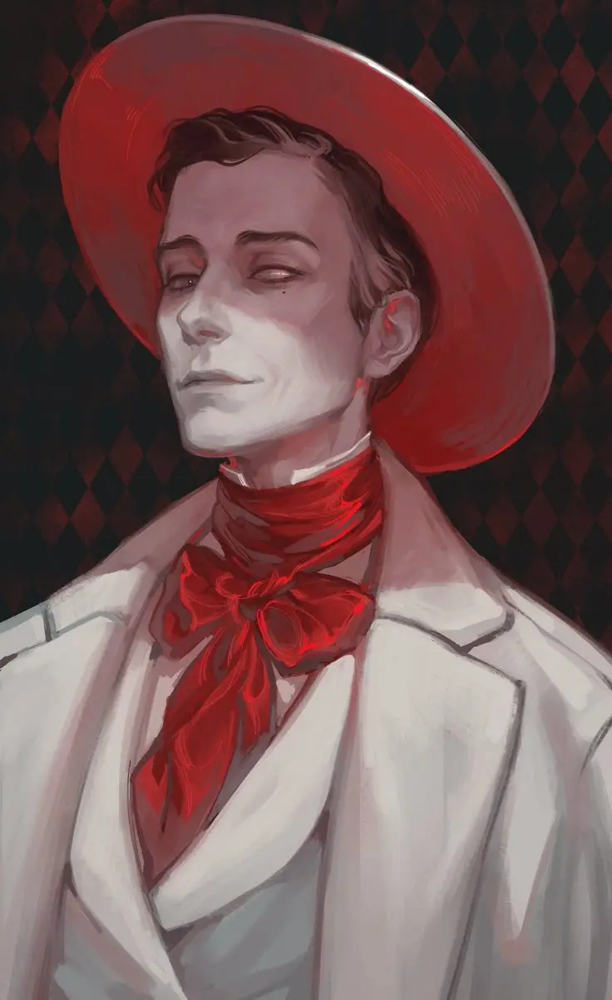

Antes do Colapso de Vetor Zero, Yukie era o rosto da perfeição humana. Atleta olímpico imbatível, ele escondia um segredo que nem os scanners de doping mais avançados da época podiam detectar: o domínio do Chi. Yukie não vencia apenas pela força muscular, mas pela canalização de energia bioelétrica que otimizava cada tendão, permitindo feitos que desafiavam a física.
Essa sequência ininterrupta de vitórias atraiu a atenção da Yakuza Neon Lotus, que controlava as apostas no submundo. Quando Yukie recusou a proposta de "entregar" a final de 2025 em troca de créditos corporativos, o destino dele foi selado.
Durante sua apresentação final, o estádio foi sabotado. Uma explosão térmica em pleno salto causou uma queda catastrófica. O impacto foi devastador: Yukie teve a perna esquerda pulverizada e lesões na coluna que o deixaram à beira da morte cerebral.
Em um ato de desespero e sem fundos para tratamentos de regeneração biológica, ele foi submetido a um transplante experimental urgente. Sua consciência foi transferida para um chassi biomecanóide rudimentar — um corpo construído com peças de drones industriais e hidráulica de combate reaproveitada. A fama morreu no asfalto; o homem tornou-se sucata.
Hoje, Yukie vive nos níveis mais baixos de Neo-Tokyo. Ele veste um conjunto raro de vestuário Nike Astra-Run, projetado originalmente para colonizadores espaciais. O tecido é resistente a radiações e rasgos térmicos, servindo como uma segunda pele para seu corpo metálico frio.
Como mercenário, ele é conhecido pelo seu código de honra inabalável. Apesar de sua aparência bruta de ferro e fios, ele é um mestre de Kendo, utilizando uma lâmina de alta frequência para proteger os órfãos e os miseráveis do Setor de Ferro. Todo crédito que ganha em missões é investido na manutenção de abrigos comunitários.
Existe uma falha recorrente em seu hardware: sua perna esquerda biomecânica nunca funciona perfeitamente. Yukie já tentou dezenas de reparos e peças de reposição, mas todas falham ou entram em curto-circuito. Ele acredita ser um defeito técnico, mas no fundo, é uma cicatriz psicossomática — o Chi de Yukie se recusa a fluir corretamente através do metal que substituiu sua carne naquela fatídica queda.
Yukie é estoico e silencioso. Ele carrega a melancolia de quem já tocou o céu e agora caminha pelo inferno. Sua única alegria é ensinar fundamentos de defesa pessoal para as crianças das favelas, tentando garantir que elas não sejam as próximas vítimas do sistema que o destruiu.
"O metal pode ser forte, mas é cego. Sem o fluxo da vida, somos apenas máquinas esperando a ferrugem chegar." — Yukie, o V-8.
Diferente de outros netrunners, Echo não apenas quebra protocolos; ela consegue ouvir os sussurros das IAs antigas que ainda vagam como fantasmas pela rede morta de 2026.
"No silêncio da rede morta, os fantasmas do antigo mundo sussurram segredos que a carne jamais entenderia." — Echo.

Akane possui cabelo loiro longo e liso, normalmente solto, com franja leve sobre a testa. Seus olhos são verdes. Seu estilo mistura funcionalidade com um toque urbano:
Ela quase sempre usa headphones vermelhos, que servem tanto para ouvir música quanto para bloquear o barulho da cidade enquanto pensa. Sua postura corporal costuma ser relaxada, mas sempre alerta, como alguém acostumado a observar tudo ao redor.
Akane trabalha em uma pequena hamburgueria mista localizada nos níveis médios da cidade. O local funciona como restaurante simples durante a noite e ponto de encontro para trabalhadores e mercenários da região. Ela trabalha principalmente nos turnos da noite.
Apesar de parecer um trabalho comum, ela escolheu o local porque permite:
Além disso, ocasionalmente ela aceita pequenos trabalhos investigativos para policiais ou civis da região.
Antes de sua demissão, Akane era perita forense da divisão de inteligência militar. Ela trabalhava ligada ao equivalente militar do Exército, atuando em cooperação com o Serviço de Polícia Judiciária Militar e setores de Inteligência Militar.
Suas funções incluíam:
Akane era considerada uma das analistas mais promissoras da divisão.
Durante uma missão aparentemente rotineira, Akane foi enviada para investigar um possível crime dentro de uma base militar. Quando chegou ao local, algo estava errado. O cenário parecia limpo demais:
Era como se o evento nunca tivesse acontecido. Ainda assim, Akane percebeu algo estranho: uma pequena marca no metal de uma das paredes da instalação, um padrão que não correspondia a nenhuma ferramenta ou arma conhecida. Antes que pudesse investigar mais profundamente, ela foi chamada de volta ao quartel. Ao retornar, recebeu imediatamente a notícia: estava sendo desligada da divisão. Sem nenhum motivo aparente, desde então, ela nunca mais conseguiu entrar em contato com nenhum membro da antiga unidade.
Akane mora sozinha em um pequeno apartamento em um prédio antigo da cidade. Seu único companheiro é sua gata, chamada Katara, que um dia apareceu em sua janela e nunca mais foi embora.
Akane é uma pessoa reservada, analítica e extremamente racional. Ela prefere observar primeiro antes de agir. Características principais:
Ela raramente fala mais do que o necessário, mas também não é rude. Quando conversa com alguém, escuta com atenção, responde de forma direta e evita conflitos desnecessários. Ela valoriza a conversa mútua.
Sua mente funciona quase como um laboratório mental. Quando enfrenta um problema, ela costuma:
Esse método investigativo foi desenvolvido durante anos de treinamento.
O treinamento militar e científico fizeram dela uma pessoa altamente capacitada. Principais habilidades:
Apesar de suas qualidades, Akane possui falhas importantes. Ela pode ser:
Quando algo não faz sentido, ela tem dificuldade em simplesmente ignorar.
Akane raramente admite ter medo. Mas existem duas coisas que a perturbam profundamente:
Akane diz a si mesma que apenas quer sobreviver. Mas no fundo existe algo que ela nunca abandonou: ela quer descobrir a verdade sobre o caso que a expulsou do exército, mesmo que isso a leve novamente para o perigo.
Neste último mês que se passou, Akane se distanciou do grupo. Após um período de convivência, ela simplesmente desapareceu sem avisar, encarando sua partida como se fosse uma missão concluída. Esse sumiço foi necessário para que ela pudesse colocar sua vida em ordem; como bloqueou as memórias de sua antiga equipe militar, ela ainda sente dificuldade em criar novos vínculos emocionais estáveis, preferindo a autossuficiência ao apego.
Durante este tempo, ela não buscou respostas para o seu passado, mas focou em restabelecer sua presença na cidade:
"As pessoas mentem com palavras, mas nunca com a forma como ocupam o espaço. Eu prefiro o som dos meus fones de ouvido e a verdade crua das sombras; o resto é apenas ruído de fundo."

Esqueceu o próprio irmão que o abandonou na pobreza após a morte do pai. O bloqueio foi causado pela Cirurgia Tao, solicitada pelo Android de Guerra, Jhino.
"Arrancaram meu passado e o rosto do meu irmão, mas não conseguiram silenciar a sede por respostas." — Alan.

Esqueceu a identidade de quem realmente o adotou e de seu verdadeiro mentor musical, o homem conhecido como Silver.
"O único ritmo que resta nesta cidade é o zumbido dos cabos de alta tensão e a batida de um coração que se recusa a parar." — David.

Esqueceu sua infância e amigos antes de ser abandonado na Zona Cinza. Ironicamente, esta era sua memória mais alegre.
"A felicidade é um erro de sistema. Prefiro viver na realidade cinzenta da Zona de Ferro." — Etan.

Jean-Jacques carrega no rosto as marcas de décadas de excessos e uma batalha quase perdida contra o tempo. Apesar da idade avançada, mantém uma postura elegante que remete à sua origem burguesa francesa. Seus traços distintivos são:
Sua vestimenta mistura alfaiataria francesa clássica com modificações tecnológicas brutas para sustentar sua saúde fragilizada.
Jacques atua como Netrunner Consultor de alto escalão, vivendo isolado, mas é uma lenda viva nos protocolos da rede morta. Atua como um "anjo da guarda" digital para os oprimidos e moradores das favelas verticais. Frequentemente é contratado para resolver enigmas que IAs modernas não conseguem decifrar, cobrando preços irrisórios dos pobres e fortunas dos corporativos.
Jacques é o último herdeiro de uma fusão dinástica sem precedentes: a união entre a família Arnault (Louis Vuitton) e a família Bettencourt (L'Oréal). Sua mãe o batizou secretamente como Lucian — "Aquele que traz a Luz" — sabendo que sua perspicácia seria vital após o apagão de 2026.
Recusando o trono corporativo para servir à justiça, ele se destacou como investigador na Gendarmerie Nationale até o desaparecimento de seus companheiros Seth e Dion. O trauma levou ao exílio no Japão e à autodestruição, culminando em um câncer terminal, salvo pela intervenção de Alan e do Bandoleiro da 4ª Balada de Neo-Tokyo.
Jacques é um paradoxo: cavalheiro erudito com hábitos autodestrutivos. Leal aos poucos amigos, mas mantém distância emocional para evitar a dor da perda.
Mente opera em duas camadas simultâneas: o investigador clássico que analisa evidências físicas e o Netrunner de elite que enxerga o mundo como fluxo de dados. Acredita que o futuro só pode ser compreendido através do estudo do passado.
Seu medo mais profundo é ficar sozinho. O silêncio da rede e a ausência de vozes amigas são seus maiores pesadelos.
Jacques busca qualquer sinal de Seth ou Dion. Ele acredita que, se ainda estiverem em algum lugar da rede ou do mundo, ele talvez não seja o único capaz de encontrá-los.
"Um brinde à anarquia, mon cher. Se o sistema não passa de uma redoma de cristal, eu sou o diamante que a risca — e pretendo saborear meu Veuve Clicquot enquanto assisto ao belo espetáculo do colapso."